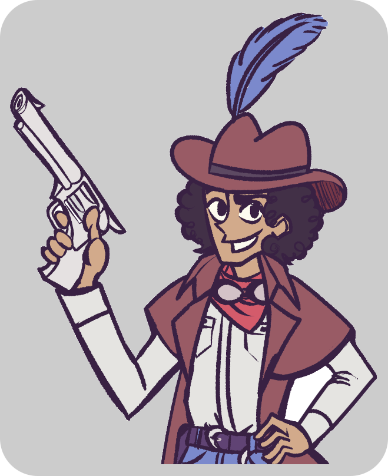

Gunslingers. Outlaws. Miracles and monsters.
This place may remind you of the American West of old, but the truth is stranger than that. These are Tales of the Wasted West, an original high fantasy audio drama. Here, you’ll find talking shrunken heads, ancient machinery springing to life, and many other oddities that plague Grinstow, a dangerous wasteland not quite like the Old West we know and love.
The Wasted West is an independent podcast and radio play produced by students from the University of Maryland, College Park and Baltimore County. Be sure to catch the newest episodes on WMUC Digital, College Park, UMD's student-run radio station. To hear new episodes live, tune in every Monday at 10 p.m. EST on WMUC or check us out on our other podcasting platforms.
E1: Pilot
An original high fantasy Western about a young rancher and his quest to protect his family from their ancestral enemies. He will encounter many allies and enemies in his journey across the dangerous wastelands of Grinstow.
E2: The Canyon Watch
During their journey westward, our travelers are pursued into the mining boomtown of Devil's Canyon. Unbeknownst to them, the city is investigating a mysterious case of stolen firearms, and their pursuer might be the main culprit.
E3: The Mercenary
Our travelers finally make their way to the bustling city of Arcadia. However, after an altercation with a corrupt banker, the travelers find themselves imprisoned and sentenced to death, leaving them vulnerable to their many enemies.
E4: Reunions
Now on the run from the law, our travelers take refuge at a small town in the desert, plagued with shapeshifting creatures. There, they meet a friendly band of traveling medicine salesmen and performers, as well as a mysterious bounty hunter, who they're not sure they can trust.
You can also send us an email at therealwastedwest@gmail.com

Alexander W
Director
Brandon Jones
Director

Mikey Lee
Director / Creator

Justin Ueberhorst
Sound Engineer

Hanuel Kim
Social Media Coordinator

Ken Chen
Composer

Kenge B
Cast Recruiter

Tim Harris
Gideon Greer

Morgan Elgarten
Sylas Jaltano
Jerry Schultz
The Head

Marc Ludwig
the Narrator

Lexie Miller
Sylvia Jaltano

Jennifer Pyle
Piper Mulligan

Rich Greene
Zephyro and Side Roles

Ronnie Jackson
Captain Markles

Monte Reichert
Pascal and Side Roles

Clara MacLeod
Side Roles

Nate Nelson
the Doctor and Train Robber

John Brownfiel
the Apothecary

Julia Crowley
Side Roles
James
Side Roles

Howard Hulin
Josiah "Pappy" Jaltano and Lozeng

Christian Collado
Lucah Maldonado and Side Roles
D’angelo Delisca
Side Roles
Sean Gougeon
Baldock
Margaret Beyer
Midnight Spy 2
Matt Francisco
Warren van Buren and Side Roles
Brett Balfour
the Dark Rider
Christian Thornton
Bandit 2 and Guard
Justin Geiss
Train Robber 2
Harley
Artist

Min K
Artist

Béla Oehser
Artist

João Vila
Music Producer

Josh Blume
Music Producer

Daniel Moylan
Website Creator
Mikey Lee, Director
Mikey Lee is a senior computer science and English undergrad at the University of Maryland, College Park. Though his specialty is in prose, he has written more scripts in total than he has short stories or novellas. His first ever large-scale project, the Wasted West, was conceived after expanding upon a homework assignment for a screenwriting course.
Alexander W, Director
Alexander W. is a junior computer science and mathematics undergrad at the University of Maryland, College Park. Tales of the Wasted West is the first creative project of this nature to which he has contributed.
Brandon Jones, Director
-bio-?
Justin Ueberhorst, Sound Engineer
Justin Ueberhorst is an audio engineer who trained at the Art Institute of Atlanta in 2009 with a concentration in studio recording/mixing and mastering as it pertains to music. He has been a freelance audio engineer ever since. In 2017 he also attended George Mason University for film and video studies with a minor in audio production, this time focusing on post production audio and video as it pertains to film.
Hanuel Kim, Social Media Coordinator
Haneul Kim is a freshman Physics major on a Pre-Medicine track at the University of Maryland, Baltimore County. Tales of the Wasted West is the first creative project that he has been a part of.
Ken Chen, Composer
Ken Chen is a graduate of the University of Cincinnati’s College-Conservatory of Music, with a BM in piano performance and clarinet performance. He does a lot of arranging of music for the piano and also teaches both piano and clarinet.
Kenge B, Cast Recruiter
Kenge B graduated from George Mason University in 2021 with two Bachelors of Arts in Film Directing and Producing, and Theatre Performance. She is an award winning filmmaker. Her most recent film, Ring Ring, garnered her a nomination for Best Writer and her lead a nomination for Best Actress during the international Couch Film Festival of Spring 2022. She currently works at National Geographic Studios while still writing and directing her independent films on the side.
Tim Harris as Gideon Greer
Tim Harris is a voice actor based out of Oklahoma. In his free time, he enjoys making props and costume pieces, playing video games, and cooking. He is also one of the narrators/VAs for "We the Celestials Anime What Ifs". And let's not forget that wicked mustache...
Morgan Elgarten as Sylas Jaltano
Morgan Elgarten is a voice actor/actor and has appeared in a range of productions from live off-off-broadway shows to tv series to audio dramas. He believes that there is always something to be learned from everyone and everything and is a self-proclaimed knowledge seeker. He draws on his personal experiences to create rich and engaging characters. And when he's not doing that he's binging anime on Netflix or gaming until 3am with friends.
Jerry Schultz as The Head
-bio-?
Marc Ludwig as the Narrator
A graduate from the University of Alberta’s Acting Program with over a decade of theatre experience, Marc has toured with Alberta Opera’s production of Jack and the Beanstalk as the Giant, starred in the world-premiere of Colleen Murphy’s Bright Burning, wrote and directed for Blackout Sketch Comedy and performed for The 11’O Clock Number, the musical improv troupe. Now based in the GTA, he's looking forward to starring as Ash in Mansfield Entertainment's Evil Dead: The Musical and as Chris in Northumberland Player's All My Sons. Also a voice actor, catch him as Detective Nathaniel Silver in Season 1 of Darkstead, and as Rick in Twisted Tales of Madness and Murder's Serving Ruth.
Lexie Miller as Sylvia Jaltano
Lexie Miller is currently a student majoring in Creative Writing and Musical Theatre. She has always loved voice over and is having a great experience on this show. She is thrilled to be a part of this production!
Jennifer Pyle as Piper Mulligan
Jennifer is a stage and film actress, voice over artist, and classically-trained ballet dancer. She has performed lead and supporting roles in many television, feature film, and indie film productions. Her most recent credit was the role of Christina in the show A Haunting on the Travel Channel. In addition to being the voice of Piper on Tales of the Wasted West, Jennifer is also currently voicing the role of Dawn in the podcast comedy series “Fine in Dandee.” Her theater credits include Sorelli in Phantom of the Opera, Helen Keller in the Miracle Worker, and Dream Laurey in Oklahoma!
Rich Greene as Zephyro and Side Roles
Rich Greene has been an entertainer for over 45 years. He's worked as a rock band front man, singer, guitarist, songwriter, educator, game show contestant, and, more recently, a voice actor and radio ad producer. He loves long walks along the Erie Canal and peanut butter.
Ronnie Jackson as Captain Markles
Ronnie was born in Wynnewood, Oklahoma and grew up there. His family is from Oklahoma and North Texas. Besides acting and voice acting, he has worked in various other areas - environmental civil investigator, farm & ranch hand, park ranger and serving in the US Coast Guard. He has attended training for acting/voice acting in Houston, Austin and workshops in NYC. He lives in Texas with his wife Christina. He enjoys hiking, kayaking, cooking, traveling and shooting pistols at the range.
Monte Reichert as Pascal and Side Roles
Monte came from a career in aerospace engineering before becoming a voice over artist. In addition to performing voiceover, he has been involved with continuing education/training with leaders in the voice over industry. He also performs on stage with the performing arts department at Yavapai College in Prescott, Arizona as well as various community theater performances. Being asked to join the cast of Tales of the Wasted West has been a fun and truly rewarding opportunity.
Clara MacLeod as Side Roles
Clara MacLeod (she/her) is an actor and singer-songwriter based out of Vancouver, BC, and is SO excited to be a part of this project. She is also a graduate of the St. Clair College Musical Theatre Performance program and has a Bachelor of Performing Arts Degree from Capilano University. For more about Clara, visit www.claramacleod.com
Nate Nelson as the Doctor and Train Robber
Award winning voice actor Nate Nelson got his start in the industry as producer for the "Mackay in the Morning show" on suburban. Chicago radio. As a voice actor, Nate has had the pleasure of voicing and dubbing a variety of characters. Nate is no stranger to being on camera as well, having worked on shows for HBO, Netflix, and ID channel.
John Brownfiel as the Apothecary
John Brownfiel is a voice actor from New York who has done scripted podcasts/ college projects. He likes animation, telling stories, and playing games of all sorts. He loves to put a smile on your face with a funny joke or reference. He can tell you the entire plot of a tv show without missing a beat.
Julia Crowley as Side Roles
Julia Crowley (she/her) is a New York City based actress and creator. Her performances can be seen across stage, screen, and radio. Originally from Massachusetts, she graduated from Vermont's Bennington College, and has since been working professionally in NYC and New England. She has been a writer for the the audio piece, A Plant Play produced by First Kiss Theatre, and the serial comedy performance, How Do You Say...? about two stoners solving an art heist case in Paris. She can be seen as Jessie in the upcoming feature length film The Worst Year Ever (We Are Not Okay).
James as Side Roles
James has been performing for the past 25yrs in stage performances. He has played notable roles such as Tevye in Fiddler or the Roof, Sparky in the touring production of Forever Plaid and Daddy Warbucks in Annie. He is very happy to be part of this cast as he transitions into voiceover work. Thanks to the cast and crew for their great work on this project.
Howard Hulin as Josiah "Pappy" Jaltano and Lozeng
Howard is a professional voice over artist who started voicing corporate commercials, training materials, internal and external media over 35 years ago. Whether you're looking for a deep, somewhat western gravely voice, a more passionate warm tenor, or an excitable goofball character just ask for it and he'll bring it! He's also an avid content creator using multiple mediums for a variety or purposes. Take a look at his work at QualityVocalArtistry.com or on his Youtube Page.
Christian Collado as Lucah Maldonado and Side Roles
Christian Collado is a Dominican-American voice artist, actor, and writer based in Chicago. They work in film, podcasts, commercials, audiobooks, animation and everything in between. Upcoming projects include Sponsor (Tandon Production), The Madness of Chartrulean (Packhowl Media), and of course, Tales of the Wasted West.
D’angelo Delisca as Side Roles
-bio-?
Sean Gougeon as Baldock
-bio-?
Margaret Beyer as Midnight Spy 2
-bio-?
Matt Francisco as Warren van Buren and Side Roles
-bio-?
Brett Balfour as the Dark Rider
-bio-?
Christian Thornton as Bandit 2 and Guard
-bio-?
Justin Geiss as Train Robber 2
-bio-?
Harley, Artist
Harley/Geeznkrow is a largely self taught, independent artist and filmmaker who specializes in anthropomorphic characters and surreal storytelling. Creating multiple short films that focus on experimental animation techniques, he graduated from Stevenson University in 2021 with a degree in Interdisciplinary Studies of Film & Moving Image and Graphic Design. During his time in school he studied editing, motion graphics, cinematography, lighting, and screenwriting. Harley is currently working as a freelance artist in the hopes of generating more experimental animated works.
Min K, Artist
Min “Rodroid” K. is a recent graduate of the University of Maryland, obtaining their BA in Studio Art in Winter of 2021. Their work is based around digital illustration, character design, and down-to-earth world building, often containing a quiet, ethereal quality inspired by slice-of-life comics and cartoons. Their work also carries themes of nostalgia through mimicking late 90’s and 2000’s visual trends in cartoons, architecture, and technology. They are the character designer and artist for Tales of the Wasted West.
Béla Oehser, Artist
Béla Oehser is your run-of-the-mill new-age hipster with an art degree, designer of the podcast's logo, and advisor for early episode drafts. His love of everything avant-garde would eventually lead to him create Fictron, a podcast exploring alternative fiction. He loves all kinds of fiction, but especially favors those which blur the line between fiction and reality. He is also a digital artist, and is currently experimenting with controlled JPEG artifacting in his work to enhance aesthetic value.
João Vila, Music Producer
João Victor Vila is a music producer from Rio de Janeiro, Brazil. He started his career by participating in some projects with Porta dos Fundos and other Brazilian projects. Tales of the Wasted West is the first international project he worked on.
Josh Blume, Music Producer
Josh Blume is a Computer Science major at University of Maryland. He writes and arranges music as well as performs throughout the DC area. He also writes, acts and produces in sketch and standup shows with Rails Comedy.
Daniel Moylan, Website Creator
Daniel Moylan is a junior computer engineering and mathematics major at the University of Maryland. He is most interested in hardware design and has done a few low level (hardware / C / Assembly) projects over the years, but he can take on practically any programming challenge, given some time. He also likes to produce music, watch YouTube, and write convenience bash scripts in his free time. For this project, he engineered the gun sounds and is the sole creator and maintainer of this website, which he managed to do at no cost to the project. If you are in need of a programmer, sound engineer, sysadmin, or someone to talk to, you can email him.